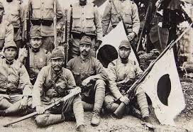

Menu
Berita
Penjajahan Jepang Ke indonesia
Pada tahun 1942, pasukan Jepang resmi menduduki Indonesia setelah Belanda menyerah tanpa syarat di Kalijati, Subang, Jawa Barat. Kedatangan Jepang pada awalnya disambut sebagian rakyat Indonesia karena mereka mengusung slogan “Asia untuk Orang Asia” dan menjanjikan kemerdekaan. Namun, harapan tersebut segera pupus ketika rakyat menyadari bahwa Jepang hanya ingin memanfaatkan sumber daya dan tenaga rakyat untuk kepentingan perang. Pemerintahan J epang di Indonesia bersifat militeristik dan keras, membagi wilayah Indonesia menjadi tiga bagian utama di bawah kendali angkatan darat dan laut. Berbagai kebijakan iterapkan, seperti kerja paksa (romusha), kewajiban menyerahkan hasil bumi, serta penggunaan bahasa Jepang dalam pendidikan. Rakyat Indonesia menderita akibat kelaparan, kekerasan, dan tekanan ekonomi. Meski demikian, masa pendudukan Jepang turut membangkitkan semangat nasionalisme dan melahirkan pelatihan militer bagi pemuda Indonesia. Setelah kekalahan Jepang akibat bom atom di Hiroshima dan Nagasaki pada Agustus 1945, Jepang menyerah kepada Sekutu. Peristiwa ini menjadi momentum bagi bangsa Indonesia untuk memproklamasikan kemerdekaan pada 17 Agustus 1945.
Kembali